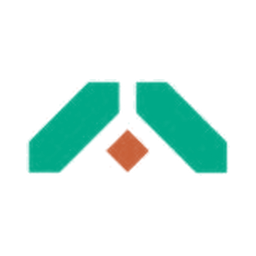

Meetal ERP
A Meetal é uma plataforma ERP B2B em evolução que gerencia estoque, finanças e logística em tempo real para unidades industriais de reciclagem.
Como engenheiro de back-end principal, ajudo a escalar a plataforma em ambientes de produção ativos. Entre as principais iniciativas estão a liderança da migração de arquitetura sem downtime de um modelo serverless em DynamoDB para FastAPI e PostgreSQL, a construção de integrações seriais (RS-232) com balanças industriais no local e a automação de fluxos operacionais com pipelines estruturados da OpenAI.
- Migração de dados Corte sem downtime do DynamoDB para FastAPI e PostgreSQL
- Camada de hardware Balança industrial RS-232 e comunicação serial em tempo real
- Assistente de consultas com IA Assistente em linguagem natural para consultas de usuários com a API da OpenAI
Stack
DynamoDB Python FastAPI PostgreSQL Amazon Web Services Docker OpenAI API Streamlit